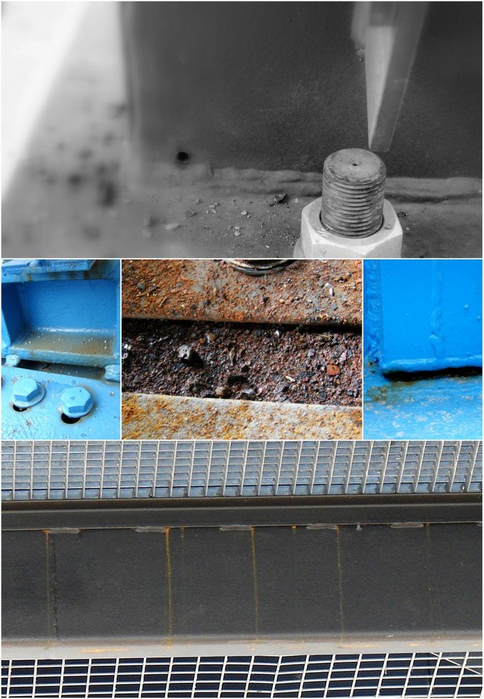
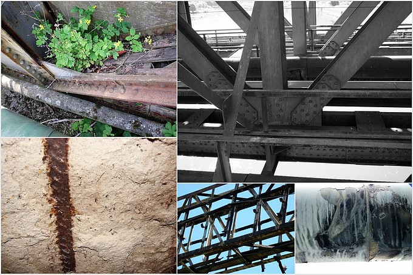
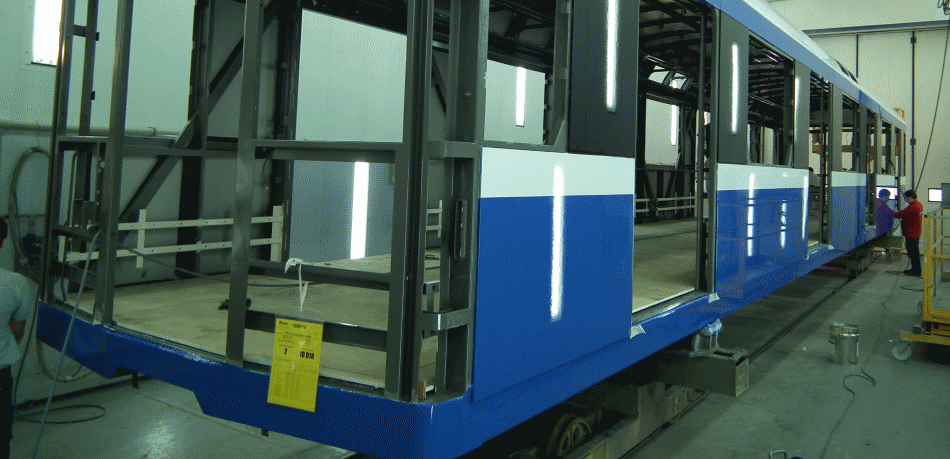
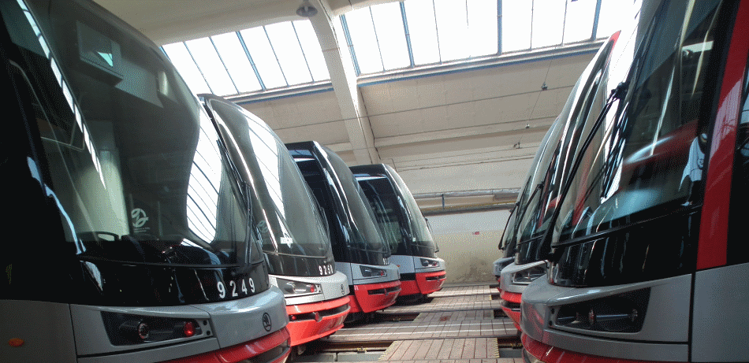
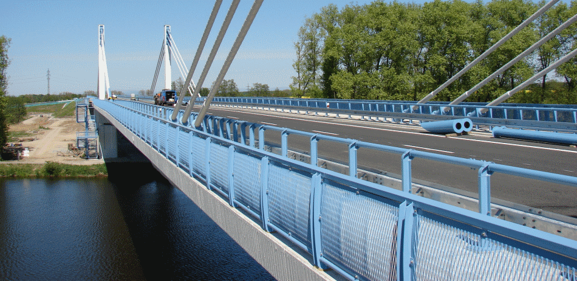

ČSN EN ISO 12944
Inspekce PKO
Nezávislá inspekce a dozor PKO při aplikaci
Nezávislý technický dozor a kontrola technologické kázně lakovny certifikovaným korozním technikem (FROSIO / ČNS / AKI).
Autorizovaný dozor nad prováděním PKO dle ČSN EN ISO 12944, laboratorní zkoušky přilnavosti dle ISO 4624 a ISO 2409, posouzení životnosti ocelových konstrukcí a supervize lakoven certifikovaným korozním technikem.
Poskytujeme komplexní inženýrské a kontrolní služby pro investory, projektanty i lakovny. Cílem je maximální prodloužení životnosti konstrukcí a eliminace drahých předčasných korozních havárií.
Provádíme návrhy protikorozní ochrany ocelových konstrukcí ochrannými nátěrovými systémy dle normy ČSN EN ISO 12944 (části 1 až 9). Posouzením konstrukčního řešení v rané fázi projektu dokážeme eliminovat korozní kapsy, ostré hrany, nevhodné svary a štěrbiny, čímž se životnost nátěrového systému prodlužuje až na dvojnásobek při minimálních nákladech na údržbu.

Audit technologických a ekonomických aspektů průmyslových lakoven. Odhalení provozní slepoty, technologické nekázně, kontrola spotřeby nátěrových hmot při míchání a aplikaci a optimalizace technologických toků pro dosažení vyšší kvality a kapacity.
Zamezení ztrátám způsobeným nekvalitou, přesný výběr dodavatelů barev a vstupní kontrola šarží nátěrových hmot.
Soudní znalec v oboru strojírenství – povrchové úpravy. Vyhotovení nezávislých autorizovaných posudků na vady protikorozní ochrany, posouzení reklamací mezi dodavatelem a investorem, analýzy příčin selhání nátěrových systémů.
Školení aplikačních pracovníků, technologů a kontrolorů jakosti. Naši odborníci absolvovali specializační kurzy a certifikace předních světových výrobců nátěrových a tryskacích technologií: HEMPEL PAINTS, JOTUN, SIKA, PPG Protective & Marine Coatings, TIKKURILA, AKZO NOBEL, MIPA, SELEMIX, AMERON, FEIDAL Lacke, DuPont Unitherm protipožární systémy, tryskací systémy TORBO, GRACO a CLEMCO.
Koroze svou existencí způsobuje miliardové škody na majetku průmyslu i státu. Odborný dozor nad aplikační firmou garantuje dodržení technologického předpisu a maximalizuje životnost investice.
Dozor a inspekce při provádění aplikací protikorozních ochran je velmi důležitou součástí každé stavby. Inspektor může provádět trvalý dozor nad aplikační firmou, dodržením technologické kázně a postupů dle technické dokumentace a nad podmínkami při aplikacemi.
Supervize v oblasti povrchových úprav slouží k dalšímu nezávislému pohledu na protikorozní ochranu a její vyhotovení, nebo k prověření činnosti stávajícího kontrolního orgánu. Tato činnost není rozhodčí mezi dodavatelem a odběratelem – zajišťuje objektivní a faktickou analýzu protikorozní ochrany, jejího provedení nebo inspekce.

Kritickým parametrem všech povrchových úprav je kontaktní spára mezi jednotlivými vrstvami nátěru a samotným podkladem. V naší laboratoři i v terénu provádíme kompletní spektrum normovaných zkoušek.
Zkoušky pohlížejí na tahovou adhezi mezi jednotlivými vrstvami nátěrových hmot nebo mezi povlakem a samotným ocelovým povrchem. Použití odtrhoměru Elcometer 106 je nenahraditelným nástrojem pro průkazné prověření kvality povrchových úprav.
Měření přilnavosti a křehkosti vytvrzených laků vyřezáním pravoúhlé mřížky nožem Elcometer 107 a odtržením adhezní pásky. Kvalita nátěru se hodnotí stupněm 0 až 5 podle poškození dle normy.
Zjišťování elasticity a odolnosti barvy či laku vůči praskání nebo odtrhávání po ohnutí panelu kolem válcovitého nebo kónického trnu. Postupné testování až do odhalení meze pružnosti.
Testování odolnosti nátěrových hmot a práškových barev vůči popraskání a odlupování při dynamickém rázu závažím s definovanou energií z výšky až 100 cm.
Zjištění odolnosti tekutých i práškových povlaků vůči pomalé deformaci vtlačováním ocelové kuličky o průměru 20 mm do kovového podkladu až do vzniku trhlin.
Zjišťování necelistvostí a mikroskopických pórů v ochranném nátěru přístrojem Elcometer 270 pomocí nízkonapěťové mokré houbičky pro nádrže a chemické expozice.
Prohledávejte kompletní nabídku zkušebních metod, inspekčních úkonů a norem ČSN EN ISO. Kliknutím na kartu otevřete detailní technickou specifikaci.
Nezávislý technický dozor a kontrola technologické kázně lakovny certifikovaným korozním technikem (FROSIO / ČNS / AKI).
Kvantitativní stanovení tahové adheze povlaku k ocelovému podkladu a mezi jednotlivými vrstvami v MPa.
Normované vyřezání pravoúhlé mřížky nožem pro stanovení odolnosti nátěru proti oddělení od podkladu (stupeň 0 až 5).
Přesné měření tloušťky nátěrového filmu na feromagnetických i neferomagnetických podkladech s protokolem 80/20.
Zjišťování neprůchozích pórů, mikrotrhlin a mechanických poškození nátěru nízkonapěťovou mokrou houbičkou.
Měření koncentrace vodorozpustných solí a chloridů na otryskaném povrchu pro zabránění osmotickému puchýřkování.
Vizuální a komparační kontrola přípravy povrchu otryskáním a měření kotevního profilu drsnosti Ry5 / Rz.
Zařazení do korozní kategorie C1 až CX, optimalizace konstrukčních detailů a návrh předpisu nátěrového systému.
Synergická ochrana oceli spojením žárového zinkování a nátěrového systému s prodloužením trvanlivosti až 2,5×.
Objektivní kvantifikace stupně prorezavění, puchýřkování a trhlin s autorizovaným znaleckým posudkem.
Ověření houževnatosti nátěru zkouškou ohybem na cylindrickém trnu, rázem (Impact) a hloubením Erichsen.
Simulace víceleté atmosférické expozice v neutrální solné mlze, kondenzační vlhkosti a pod UV lampou.
Kombinace žárového zinkování a nátěrového systému představuje nejodolnější známou ochranu oceli v agresivním prostředí.
Samotný žárový zinek podléhá v atmosféře postupnému koroznímu úbytku (cca 1 až 4 µm ročně dle agresivity). Pokud je zinek opatřen vhodným nátěrovým systémem, nátěr chrání zinkový povlak před oxidací a zinek zase chrání ocel při lokálním mechanickém poškrábání nátěru tím, že působí jako obětovaná anoda.
Výsledná životnost duplexního systému není pouhým součtem trvanlivosti zinku a nátěru, ale násobkem: Životnost = 1,5 až 2,5 × (životnost Zn + životnost laku). To znamená bezúdržbovost konstrukce po dobu 30 až 50 let i v náročném průmyslovém prostředí C4 a C5.

Až 80 % předčasných havárií nátěrů na zinku vzniká zanedbáním předúpravy. Čerstvě pozinkovaný povrch je chemicky pasivní a běžné barvy z něj po 1–2 letech šupinatí.
Pro nanesení laku na žárový zinek je nezbytné provést jemné zametené otryskání (Sweep blasting) minerálním nekovovým abrasivem při tlaku 2–3 bary a použít speciální penetrační reaktivní epoxidové primery.

Zvolení levného nátěrového systému s nízkou životností (L do 7 let) znamená v horizontu 25 let nutnost 3 až 4 renovací na stavbě ve výškách. Náklady na lešení, mechanické čištění a nátěry v terénu převyšují původní úsporu o 300 až 500 %. Správně navržená PKO v lakovně s vysokou životností (VH nad 25 let) je nejvýhodnější investiční strategií.
Sledujeme nejnovější trendy v oblasti nízkoemisních nátěrových hmot s minimem těkavých organických látek (VOC). Testujeme a prověřujeme moderní vodouředitelné průmyslové systémy i vysokosušinové epoxidy pro náročné provozní podmínky chemických závodů a energetiky.
Disponujeme špičkovou kalibrovanou měřicí technikou pro nedestruktivní i destruktivní zkoušení přímo na stavbě i v laboratoři.
Duální sonda pro feromagnetické i neferomagnetické podklady s pamětí a statistickým vyhodnocením NDFT dle ISO 19840.
Měření tahové síly odtrhu zkušebních panenek do 25 MPa dle ČSN EN ISO 4624 s přesnou identifikací roviny lomu.
Nízkonapěťový detektor mikrotrhlin metodou mokré houbičky (9 V / 67,5 V / 90 V) pro kontrolu těsnosti nátěrů v nádržích.
Precizní nože z kalené oceli s roztečí 1 mm, 2 mm a 3 mm pro zkoušku adheze a křehkosti povlaků dle ISO 2409.
3D měření mikrostruktury povrchu v reálném čase s rozlišením 0,12 µm a zvětšením 120× až 14 400× pro detailní analýzu vad.
Měření teploty vzduchu, povrchu oceli, relativní vlhkosti a dopočet rosného bodu při aplikaci nátěrů v reálném čase.
Stanovení vodorozpustných chloridů metodou Bresle dle ISO 8502-6 a 8502-9 pro eliminaci osmotického puchýřkování.
Měření optických vlastností, stupně lesku a křídování nátěrových filmů při přejímkách a stárnutí laku.
Naše expertíza chrání kritickou infrastrukturu, dopravní techniku, energetická díla a ocelové mosty po celé České republice i v zahraničí.
Podíleli jsme se na dozorech PKO, inspekcích a laboratorních zkouškách pro významné průmyslové společnosti:
V rámci naší praxe pravidelně publikujeme technické články k problematice degradace povlaků, duplexních systémů a vlivu předúprac na životnost oceli:
Kritéria prorezavění Ri a puchýřkování dle ISO 4628.
Proč se investice do kvalitní PKO vrátí v nákladech na údržbu.
Praktické postupy kalibrace a měření tloušťky a adheze.

Potřebujete nezávislý dozor na stavbě, laboratorní zkoušku povlaku nebo znalecký posudek? Rádi vám zpracujeme nezávaznou technickou nabídku.
Průmyslové povrchové úpravy & Inspekce PKO
Mlýnská 459, 691 46 Ladná (okres Břeclav, Jihomoravský kraj)
Jaroslav Vála
IČO: 05396883 | DIČ: CZ05396883
Zapsáno v obchodním rejstříku vedeném Krajským soudem v Brně.
Odpovíme vám obvykle do 24 hodin.